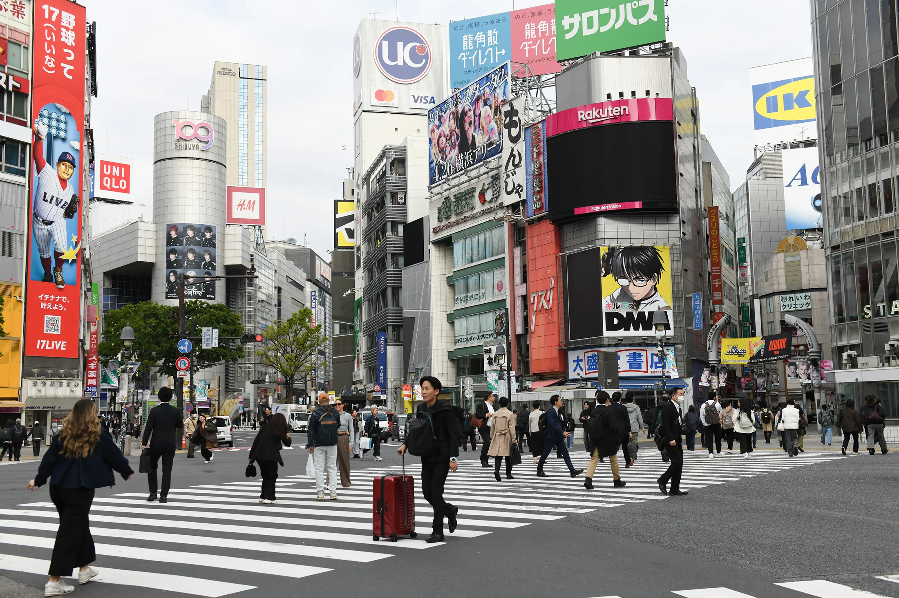
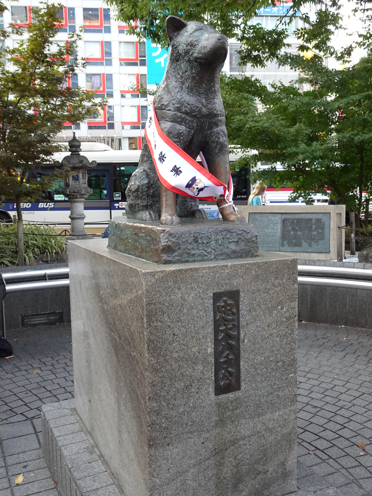
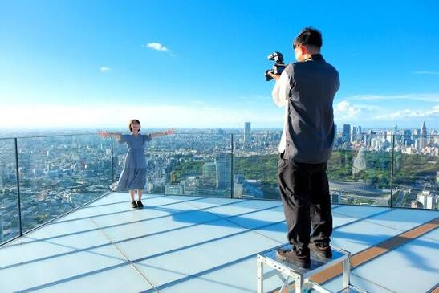
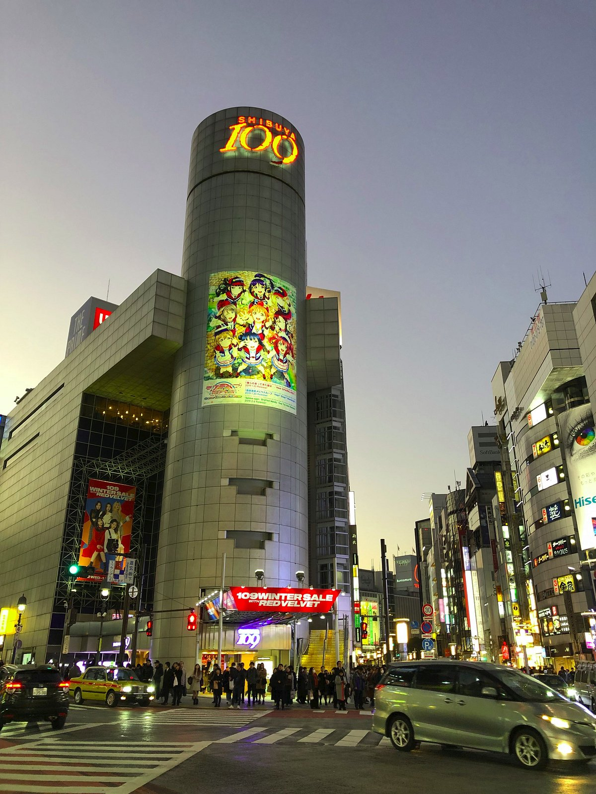
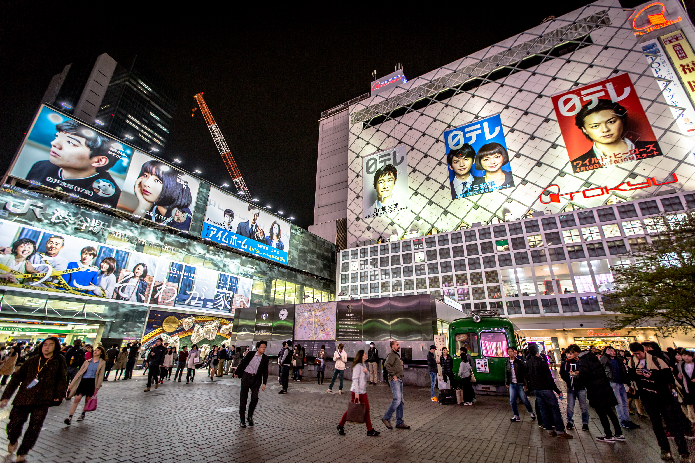

Shibuya é um dos bairros mais famosos e movimentados de Tóquio, no Japão, conhecido por sua energia contagiante, seus letreiros luminosos, sua moda urbana e sua intensa vida cultural. Considerado um dos principais centros de entretenimento, compras e tendências da cidade, o bairro é uma parada imperdível para quem deseja conhecer o lado moderno e dinâmico da capital japonesa.

Shibuya Scramble Crossing
O grande símbolo da região é o Cruzamento de Shibuya, um dos mais movimentados do mundo. A cada sinal verde, centenas de pessoas atravessam as ruas em diferentes direções, criando uma cena impressionante, especialmente à noite, quando os painéis de LED e as luzes dos edifícios iluminam a paisagem urbana.Outro ponto bastante conhecido é a estátua de Hachiko, o cão que se tornou símbolo de lealdade e ganhou o carinho dos japoneses por sua história emocionante. Localizada próximo à estação de Shibuya, ela é um dos pontos de encontro mais tradicionais do bairro e uma parada popular entre os turistas.
Pontos Turisticos
Estátua de Hachiko

Estátua de Hachiko
Localizada próxima à estação de Shibuya, a estátua homenageia Hachiko, um cão conhecido por sua extraordinária lealdade ao dono. O local se tornou um ponto de encontro popular entre moradores e turistas, além de representar uma emocionante história da cultura japonesa.
Shibuya Sky

Alto do Shibuya Sky, lugar para fotos e momentos
Situado no complexo Shibuya Scramble Square, o Shibuya Sky é um mirante que oferece vistas panorâmicas impressionantes de Tóquio. Do alto, os visitantes podem observar os arranha-céus, as ruas movimentadas e, em dias de boa visibilidade, até o Monte Fuji. É especialmente procurado para apreciar o pôr do sol e fotografar a cidade iluminada.
Shibuya 109

Centro Comercial 109
O Shibuya 109 é um famoso centro comercial conhecido por suas lojas de moda, acessórios e tendências da cultura jovem japonesa. Com diversas marcas e estilos, o local é ideal para quem gosta de fazer compras e conhecer de perto a influência de Shibuya na moda urbana do Japão.
Estação de Shibuya

Entrada da Estação de Shibuya
O metrô de Shibuya é uma das principais formas de se locomover por Tóquio, oferecendo praticidade, rapidez e conexões com diversas regiões da cidade. A Estação de Shibuya é uma das mais movimentadas da capital japonesa, integrando linhas de metrô e trem que facilitam o acesso a atrações turísticas, áreas comerciais e bairros famosos, como Shinjuku e Harajuku. Com sinalização em japonês e inglês, o sistema é acessível aos turistas e conta com opções de pagamento por bilhetes ou cartões recarregáveis, como Suica e PASMO. Para aproveitar melhor a viagem, vale evitar os horários de pico e conferir as rotas com antecedência. Além de eficiente, o transporte público de Shibuya é uma excelente maneira de explorar Tóquio com conforto e praticidade.
Guia Turistico - Shibuya
Um pequeno video para ajudar em sua viajem, com 10 coisas para se fazer na cidade!